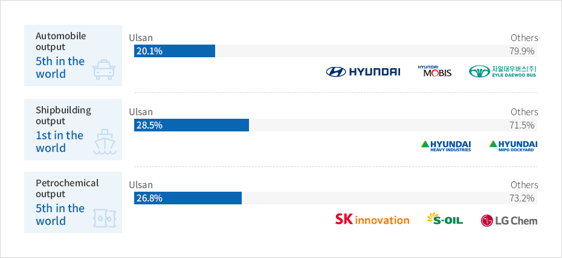

Major Industries
- Home
- Business Opportunities
- Major Industries
Major Industries


Automobile output: 5th in the world - Ulsan 20.1%, Other regions 79.9%
Shipbuilding output: 1st in the world - Ulsan 28.5%, Other regions 71.5%
Petrochemical output: 5th in the world - Ulsan 26.8%, Other regions 73.2%